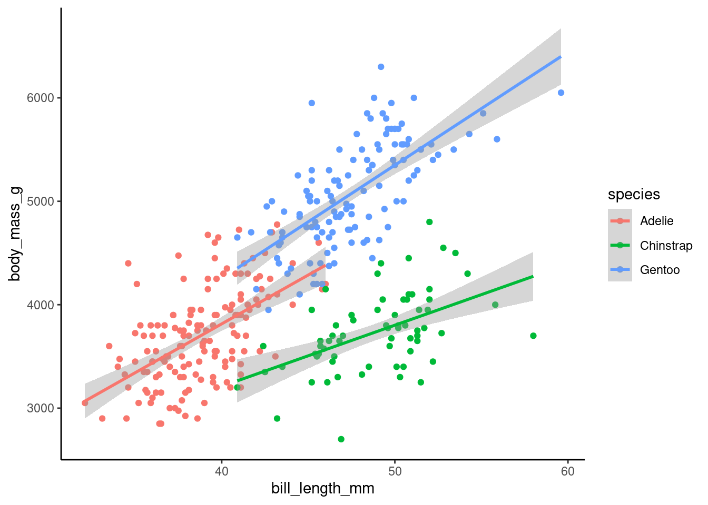
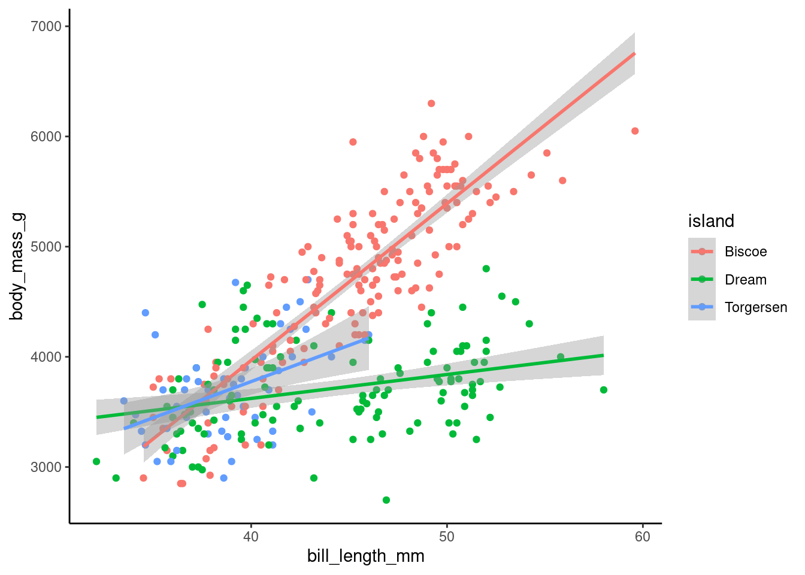
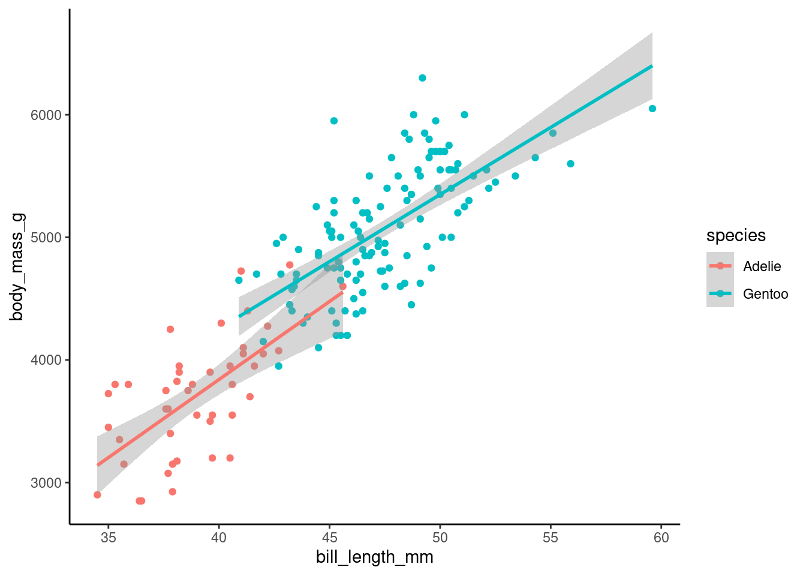
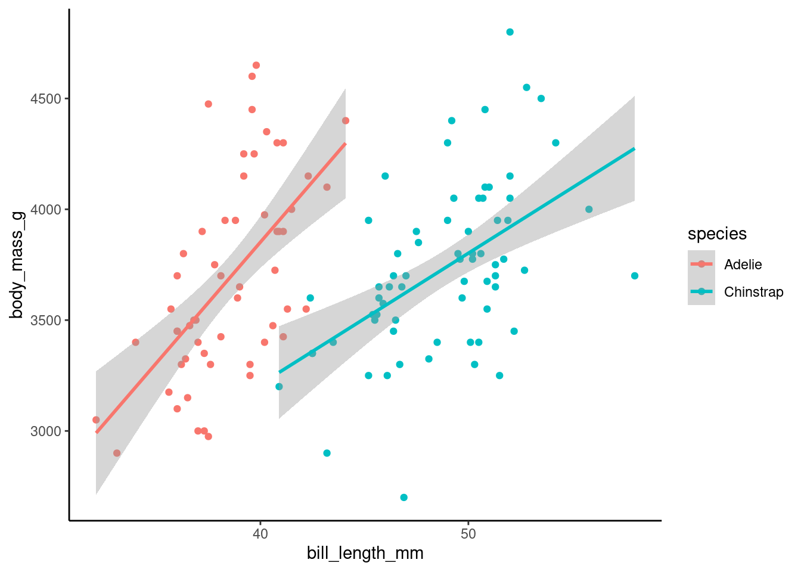
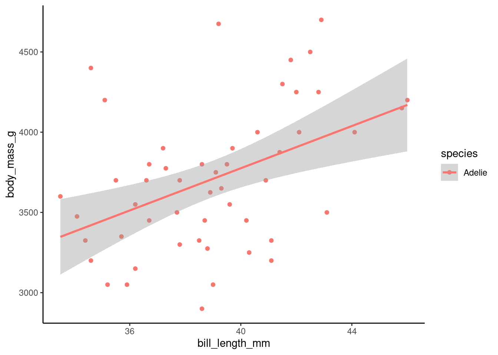
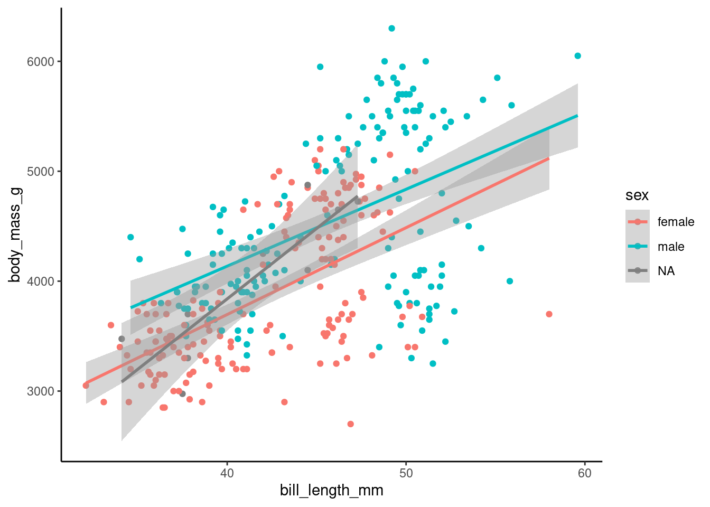
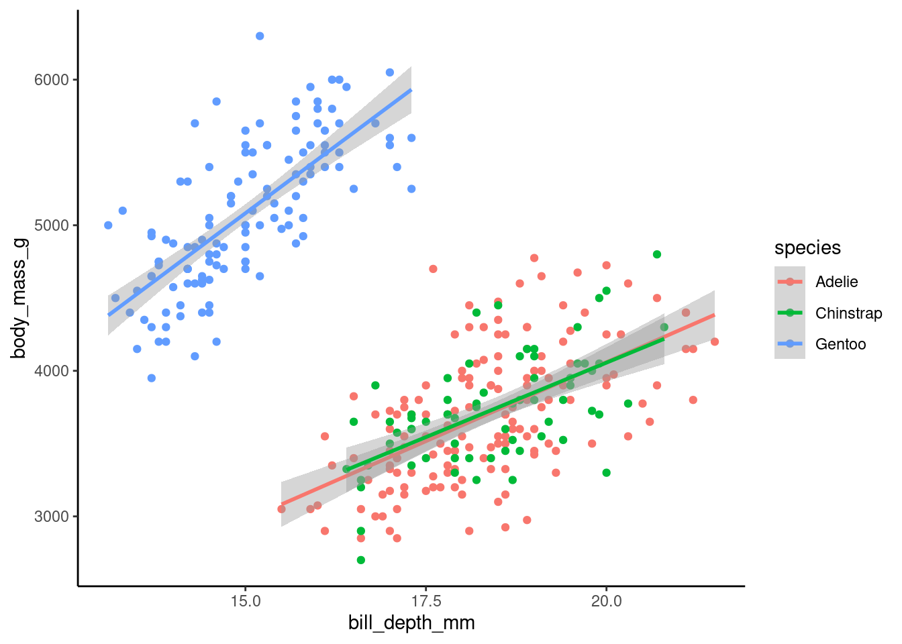

The following objects are masked from 'package:stats':
filter, lag
The following objects are masked from 'package:base':
intersect, setdiff, setequal, union
Code
library(ggplot2)library(mosaic)
Registered S3 method overwritten by 'mosaic':
method from
fortify.SpatialPolygonsDataFrame ggplot2
The 'mosaic' package masks several functions from core packages in order to add
additional features. The original behavior of these functions should not be affected by this.
Attaching package: 'mosaic'
The following object is masked from 'package:Matrix':
mean
The following object is masked from 'package:ggplot2':
stat
The following objects are masked from 'package:dplyr':
count, do, tally
The following objects are masked from 'package:stats':
binom.test, cor, cor.test, cov, fivenum, IQR, median, prop.test,
quantile, sd, t.test, var
The following objects are masked from 'package:base':
max, mean, min, prod, range, sample, sum
# load in the datadf <- palmerpenguins::penguins# Setting a theme for all the visualizationstheme_set(theme_classic())
Code
df %>%# Start with the data frame 'df'group_by(species, sex) %>%# Group data by 'species' and 'sex' columnssummarise(across(where(is.numeric), # Apply the following function to all numeric columns \(x) mean(x, na.rm =TRUE) # Calculate the mean of each column, ignoring NA values ) ) %>% knitr::kable() # Convert the resulting data frame into a Markdown table using knitr::kable()
`summarise()` has grouped output by 'species'. You can override using the
`.groups` argument.
species
sex
bill_length_mm
bill_depth_mm
flipper_length_mm
body_mass_g
year
Adelie
female
37.25753
17.62192
187.7945
3368.836
2008.055
Adelie
male
40.39041
19.07260
192.4110
4043.493
2008.055
Adelie
NA
37.84000
18.32000
185.6000
3540.000
2007.000
Chinstrap
female
46.57353
17.58824
191.7353
3527.206
2007.971
Chinstrap
male
51.09412
19.25294
199.9118
3938.971
2007.971
Gentoo
female
45.56379
14.23793
212.7069
4679.741
2008.069
Gentoo
male
49.47377
15.71803
221.5410
5484.836
2008.066
Gentoo
NA
45.62500
14.55000
215.7500
4587.500
2008.400
Penguin Mass vs Bill Length by Species
Code
df %>%ggplot(aes(x = bill_length_mm, y = body_mass_g, color = species)) +geom_point() +geom_smooth(method ="lm")
`geom_smooth()` using formula = 'y ~ x'
Warning: Removed 2 rows containing non-finite outside the scale range
(`stat_smooth()`).
Warning: Removed 2 rows containing missing values or values outside the scale range
(`geom_point()`).

It appears that bill length might be a determinant of body mass within a species of penguin.
Penguin Mass vs Bill Length by Island
Code
df %>%ggplot(aes(x = bill_length_mm, y = body_mass_g, color = island)) +geom_point() +geom_smooth(method ="lm")
`geom_smooth()` using formula = 'y ~ x'
Warning: Removed 2 rows containing non-finite outside the scale range
(`stat_smooth()`).
Warning: Removed 2 rows containing missing values or values outside the scale range
(`geom_point()`).

It appears that each island might have distinct features.
To do more analysis, let’s split the data by island
Now, within each island, let’s look at mass vs bill length by species.
Penguin Mass vs Bill Length by Species on Biscoe Island
Code
biscoe_penguins %>%ggplot(aes(x = bill_length_mm, y = body_mass_g, color = species)) +geom_point() +geom_smooth(method ="lm")
`geom_smooth()` using formula = 'y ~ x'
Warning: Removed 1 row containing non-finite outside the scale range
(`stat_smooth()`).
Warning: Removed 1 row containing missing values or values outside the scale range
(`geom_point()`).

It is interesting to note 2 things: there are only Adelie and Gentoo species penguins on Biscoe island, and it appears that bill length is a strong determinant of body mass (dependent on species.
Penguin Mass vs Bill Length by Species on Dream Island
Code
dream_penguins %>%ggplot(aes(x = bill_length_mm, y = body_mass_g, color = species)) +geom_point() +geom_smooth(method ="lm")
`geom_smooth()` using formula = 'y ~ x'

While a bit spread out, there appears to be two distinct groups based on species for the penguins on dream island.
Penguin Mass vs Bill Length by Species on Torgersen Island
Code
torgersen_penguins %>%ggplot(aes(x = bill_length_mm, y = body_mass_g, color = species)) +geom_point() +geom_smooth(method ="lm")
`geom_smooth()` using formula = 'y ~ x'
Warning: Removed 1 row containing non-finite outside the scale range
(`stat_smooth()`).
Warning: Removed 1 row containing missing values or values outside the scale range
(`geom_point()`).

Only Adelie penguins live on Torgersen island.
Penguin Mass vs Bill Length by Sex
Code
df %>%ggplot(aes(x = bill_length_mm, y = body_mass_g, color = sex)) +geom_point() +geom_smooth(method ="lm")
`geom_smooth()` using formula = 'y ~ x'
Warning: Removed 2 rows containing non-finite outside the scale range
(`stat_smooth()`).
Warning: Removed 2 rows containing missing values or values outside the scale range
(`geom_point()`).

I was expecting bill length to be a determinant of body mass depending on sex more than it appears it might be. My hypothesis was that bill length and body mass would differ depending on sex. To test this, I will perform some additional tests:
Code
# Remove rows with NA values for the variables we are interested inpenguins_clean <-na.omit(df[, c("sex", "body_mass_g", "bill_length_mm")])# Create a new variable for body mass to bill length ratiopenguins_clean <-mutate(penguins_clean, ratio = body_mass_g / bill_length_mm)# Fit linear modelmodel_full <-lm(ratio ~ sex, data = penguins_clean)# Fit a reduced model (without the sex variable)model_reduced <-lm(ratio ~1, data = penguins_clean)# Perform an F-testtest_result <-anova(model_reduced, model_full)# Print the results of the F-testprint(test_result)
Analysis of Variance Table
Model 1: ratio ~ 1
Model 2: ratio ~ sex
Res.Df RSS Df Sum of Sq F Pr(>F)
1 332 65200
2 331 60347 1 4853.1 26.619 4.279e-07 ***
---
Signif. codes: 0 '***' 0.001 '**' 0.01 '*' 0.05 '.' 0.1 ' ' 1
The null hypothesis is that the body mass to bill length ratio is not dependent on sex. The alternative hypothesis is that the body mass to bill length ratio is dependent on sex. At the .05 significance level, with a probability of nearly 0, we would reject the null hypothesis. There is evidence to indicate that sex influences the body mass to bill length ratio for penguins, regardless of their species, contrary to what the graph may indicate.
Penguin Mass vs Bill Depth by Species
Code
df %>%ggplot(aes(x = bill_depth_mm, y = body_mass_g, color = species)) +geom_point() +geom_smooth(method ="lm")
`geom_smooth()` using formula = 'y ~ x'
Warning: Removed 2 rows containing non-finite outside the scale range
(`stat_smooth()`).
Warning: Removed 2 rows containing missing values or values outside the scale range
(`geom_point()`).

It appears that bill depth might be a determinant of body mass depending on species. It is interesting to note that the Gentoo species appears to have a very distinct body mass to bill depth ratio than the Adelie and Chinstrap species. They appear to maybe have the same body mass to bill depth ratio.